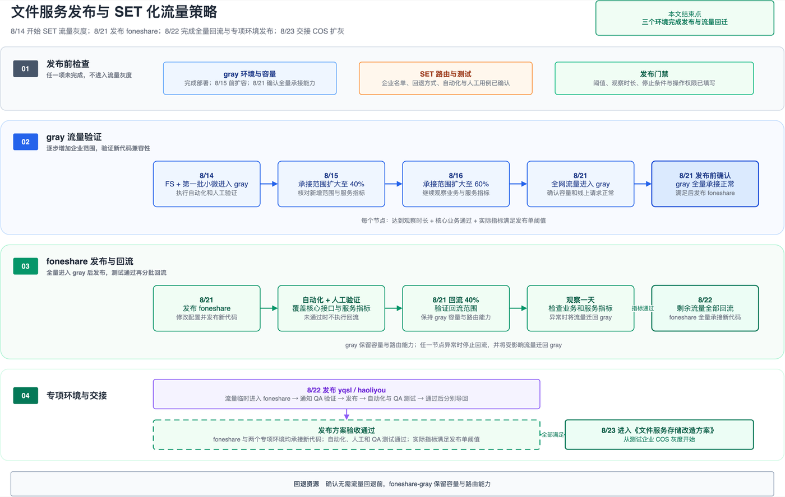

Release Baseline
发布基线
仓库 https://git.firstshare.cn/BizCommon/fs-stone.git。发布系统填 tag，不填分支名。父 POM fxiaoke-parent-pom-20260711，编译镜像 reg.foneshare.cn/base/fs-maven3.9:openjdk8。现有 v0711-master-set-20260807、v0711-master-set-20260725 都不能当最新。工作区未提交的 COS 路由改动默认不进本次 tag。
foneshare-gray
14 日前发完四个服务。14 日只导 FS 和第一批小微。配置不改。
foneshare
21 日全网进 gray 后，先新建 fs-stone-cloud-storage，再发同一 tag。
专项
22 日 yqsl 发四个服务；haoliyou 发 metaserver、fileserver。写入灰度仍是 deny。
九仓独立子用户这次继续用 gray 现网密文。yqsl 租户都是数据专属，写入走 fs-stone-enterprise-cloud-toml。haoliyou 后续迁 COS，本次先把读取链路升上去。
Timeline
发布排期
配置位置：fs-gray-file-system / profile foneshare / stone-cloud-write-v2。14–22 日保持 deny。26 日名单以 white:fs| 开头，若测试企业仍在灰度中，在 white: 后补 <测试EA>|。31 日至 9 月 4 日不得写 white:%40。

SET 流量策略 · 8 月 14 日 — 22 日 Draw.io
FS + 第一批小微导入 foneshare-gray。gray 代码必须已经在跑。导入后立刻自动化和人工验证。
stone-cloud-write-v2=deny
先给 gray 扩容，再把 SET 扩大到 40%。tag 和配置不动。
SET 扩大到 60%。观察达标才能进 21 日全网。
上午全网进 gray。验证通过后新建九仓配置，发布 foneshare，再回流 40%，gray 不缩容，观察一天。
剩余流量回 foneshare。yqsl、haoliyou 流量临时导入正式环境，发布后再分别导回。代码验收不过，COS 扩灰整体顺延。
先 white:<测试EA>，通过后再加 |fs。
stone-cloud-write-v2=white:<测试EA>
stone-cloud-write-v2=white:<测试EA>|fs
fast02 / fast04 在用小微 100 家 + FS。若测试企业还在，粘贴前插入 <测试EA>|。
stone-cloud-write-v2=white:fs|060080|159329|159626|159800|160822|164767|205205|207601|282370|293266|308582|308677|313283|318000|326338|332267|337871|338691|339348|341590|350109|350541|351527|355951|359857|361912|363227|364637|373077|373838|380282|384175|399637|40000091|40000099|40000103|40000135|40040086|40160046|40160054|40160097|40160129|40160157|40160169|40160181|40160196|40160208|40160228|40160232|40160252|090278|156107|156681|159551|161711|167042|176512|178121|185166|201819|218217|227270|233159|249770|258930|267618|268439|282489|298291|302412|304545|310801|312383|329548|337577|352222|353127|353149|353939|354584|356777|359384|361111|362718|367530|368227|368507|369927|370717|373076|374132|374664|375384|376207|377151|377239|378331|379662|380163|381081
fast02 / fast04 全部在用非 VIP、非 SVIP，约 1.7 万 EA，打开 ini 整行复制。
累计 40% / 60% / 全部非 VIP。当前 CSV 只有 Fast02/Fast04，其他分区名单未出。未出名单前不要 allow。
只开 Fast02/Fast04 时用全量 normal 名单；其他分区一并放开时用 allow。
stone-cloud-write-v2=allow
Namespace · foneshare-gray
先发 gray
14 日前发代码，14 日只导流量。配置不改。proxy 发布后按实际运行 4 恢复，不要缩到配置值 2。
| 服务 | 当前 tag | commit | 副本 | 发到 |
|---|---|---|---|---|
fs-stone-cloud | v0711-master-dec-cloud-20260725 | 96c15ee | 2/2 | v0711-master-set-20260813 |
fs-stone-metaserver | v0711-master-set-20260725 | 0cad1ab | 2/2 | v0711-master-set-20260813 |
fs-stone-fileserver | v0711-master-set-20260725 | 0cad1ab | 2/2 | v0711-master-set-20260813 |
fs-stone-proxy | v965-unify-multi-cluster-new-mq-retry | e378572 | 2/4 | v0711-master-set-20260813 |
14 日前 · 发代码
- 发布系统选 namespace
foneshare-gray，集群tke70-k8s1。 - 四个应用填 tag
v0711-master-set-20260813，按 cloud → metaserver → fileserver → proxy 发布。 - 确认四个应用都是这个 tag，Pod Running。
- gray 入口验证：普通上传、临时转正式、历史 FastDFS 下载、分片/复制/删除、数据专属仍走原存储。普通企业新文件没有写入 COS。
14 日 · 导第一批流量
- 改 SET：FS + 第一批小微切到
foneshare-gray。 - 服务 tag 不动，配置不动。导入后立刻自动化 + 人工验证。
15 / 16 / 21 日上午
- 15 日先扩容 gray，再扩到 40%。
- 16 日扩到 60%。
- 21 日上午确认容量后全网切 gray，再验 FastDFS 企业和数据专属。
每次放量前在发布单填写错误率、响应时间、内存、CPU、观察时长和停止条件。空着不准进入下一节点。异常时停止扩大，受影响企业迁回 foneshare。
回退
还没导生产流量：四个服务回退到上表旧 tag。已经在吃流量：停止扩大 SET，把受影响企业迁回正式环境。已经产生 COS 文件后，不能回退到不支持 COS 读取的旧版本。
Namespace · foneshare
21 日发正式环境
等 gray 全网承接并验证通过。必须在发 fs-stone-cloud 之前新建 fs-stone-cloud-storage（2026-08-13 查正式环境是 404）。不要改 gray 那份。发布后副本：cloud 10、metaserver 9、fileserver 12、proxy 7。
| 服务 | 当前 tag | commit | 副本 | 发到 |
|---|---|---|---|---|
fs-stone-cloud | v1.8.1-unify-20260121-mq-retry | cfee4c4 | 10/10 | 同一 tag |
fs-stone-metaserver | v985-910fix-20260126-mq-retry | f343fce | 9/9 | 同一 tag |
fs-stone-fileserver | v985-910fix-20260126-mq-retry | f343fce | 12/12 | 同一 tag |
fs-stone-proxy | v985-910fix-20260126-mq-retry | f343fce | 7/7 | 同一 tag |
配置名 fs-stone-cloud-storage，profile foneshare，正文来自 gray 现网同一份：生产桶名、内网 endpoint、配置中心密文。
[warehouse01] endpoint = "https://cos-internal.ap-beijing.myqcloud.com" region = "ap-beijing" accessKey = "6727AB27703170DA0E1A8C70B46EF961E6A06E6B38AAE8B392BC05FFCCAB58581A71D5C9902182C28635F8FB416F131D" secretKey = "FBD7E95C3CC3F81346161F5A7F7C468F797E75C84DCAA35448BFC9432EE92F87B1109907F49752836E8B21312283C6A9" bucket = "fs-pcf-warehouse-01-1251989944" tempBucket = "fs-pcf-temp-warehouse-01-1251989944" pathStyleAccess = false [warehouse02] endpoint = "https://cos-internal.ap-beijing.myqcloud.com" region = "ap-beijing" accessKey = "6727AB27703170DA0E1A8C70B46EF961E6A06E6B38AAE8B392BC05FFCCAB58581A71D5C9902182C28635F8FB416F131D" secretKey = "FBD7E95C3CC3F81346161F5A7F7C468F797E75C84DCAA35448BFC9432EE92F87B1109907F49752836E8B21312283C6A9" bucket = "fs-pcf-warehouse-02-1251989944" tempBucket = "fs-pcf-temp-warehouse-02-1251989944" pathStyleAccess = false [warehouse03] endpoint = "https://cos-internal.ap-beijing.myqcloud.com" region = "ap-beijing" accessKey = "6727AB27703170DA0E1A8C70B46EF961E6A06E6B38AAE8B392BC05FFCCAB58581A71D5C9902182C28635F8FB416F131D" secretKey = "FBD7E95C3CC3F81346161F5A7F7C468F797E75C84DCAA35448BFC9432EE92F87B1109907F49752836E8B21312283C6A9" bucket = "fs-pcf-warehouse-03-1251989944" tempBucket = "fs-pcf-temp-warehouse-03-1251989944" pathStyleAccess = false [warehouse04] endpoint = "https://cos-internal.ap-beijing.myqcloud.com" region = "ap-beijing" accessKey = "6727AB27703170DA0E1A8C70B46EF961E6A06E6B38AAE8B392BC05FFCCAB58581A71D5C9902182C28635F8FB416F131D" secretKey = "FBD7E95C3CC3F81346161F5A7F7C468F797E75C84DCAA35448BFC9432EE92F87B1109907F49752836E8B21312283C6A9" bucket = "fs-pcf-warehouse-04-1251989944" tempBucket = "fs-pcf-temp-warehouse-04-1251989944" pathStyleAccess = false [warehouse05] endpoint = "https://cos-internal.ap-beijing.myqcloud.com" region = "ap-beijing" accessKey = "6727AB27703170DA0E1A8C70B46EF961E6A06E6B38AAE8B392BC05FFCCAB58581A71D5C9902182C28635F8FB416F131D" secretKey = "FBD7E95C3CC3F81346161F5A7F7C468F797E75C84DCAA35448BFC9432EE92F87B1109907F49752836E8B21312283C6A9" bucket = "fs-pcf-warehouse-05-1251989944" tempBucket = "fs-pcf-temp-warehouse-05-1251989944" pathStyleAccess = false [warehouse06] endpoint = "https://cos-internal.ap-beijing.myqcloud.com" region = "ap-beijing" accessKey = "6727AB27703170DA0E1A8C70B46EF961E6A06E6B38AAE8B392BC05FFCCAB58581A71D5C9902182C28635F8FB416F131D" secretKey = "FBD7E95C3CC3F81346161F5A7F7C468F797E75C84DCAA35448BFC9432EE92F87B1109907F49752836E8B21312283C6A9" bucket = "fs-pcf-warehouse-06-1251989944" tempBucket = "fs-pcf-temp-warehouse-06-1251989944" pathStyleAccess = false [warehouse07] endpoint = "https://cos-internal.ap-beijing.myqcloud.com" region = "ap-beijing" accessKey = "6727AB27703170DA0E1A8C70B46EF961E6A06E6B38AAE8B392BC05FFCCAB58581A71D5C9902182C28635F8FB416F131D" secretKey = "FBD7E95C3CC3F81346161F5A7F7C468F797E75C84DCAA35448BFC9432EE92F87B1109907F49752836E8B21312283C6A9" bucket = "fs-pcf-warehouse-07-1251989944" tempBucket = "fs-pcf-temp-warehouse-07-1251989944" pathStyleAccess = false [warehouse08] endpoint = "https://cos-internal.ap-beijing.myqcloud.com" region = "ap-beijing" accessKey = "6727AB27703170DA0E1A8C70B46EF961E6A06E6B38AAE8B392BC05FFCCAB58581A71D5C9902182C28635F8FB416F131D" secretKey = "FBD7E95C3CC3F81346161F5A7F7C468F797E75C84DCAA35448BFC9432EE92F87B1109907F49752836E8B21312283C6A9" bucket = "fs-pcf-warehouse-08-1251989944" tempBucket = "fs-pcf-temp-warehouse-08-1251989944" pathStyleAccess = false [warehouse09] endpoint = "https://cos-internal.ap-beijing.myqcloud.com" region = "ap-beijing" accessKey = "6727AB27703170DA0E1A8C70B46EF961E6A06E6B38AAE8B392BC05FFCCAB58581A71D5C9902182C28635F8FB416F131D" secretKey = "FBD7E95C3CC3F81346161F5A7F7C468F797E75C84DCAA35448BFC9432EE92F87B1109907F49752836E8B21312283C6A9" bucket = "fs-pcf-warehouse-09-1251989944" tempBucket = "fs-pcf-temp-warehouse-09-1251989944" pathStyleAccess = false
发布配置后用 profile foneshare 再拉一次，应是 HTTP 200，九个 section 都在。stone-cloud-write-v2 当天仍是 deny。
先改配置，再发代码
- 确认全网流量已经在 gray，验证通过。
- 配置中心新建
fs-stone-cloud-storage，把上面 TOML 整段粘贴并发布。 - 打开
fs-gray-file-system确认仍是 deny。 - 发布系统选 namespace
foneshare，四个应用填 gray 已在跑的同一个 tag，按顺序发布。 - 确认 tag、Pod Running、副本回到生产规模。
发布后验证，再回流
- 立刻跑自动化和人工测试。任一失败：流量继续留 gray。
- 通过后把 40% 从 gray 导回
foneshare，观察一天，gray 不缩容。 - 22 日观察达标后，剩余流量全部导回，再把两个专项环境流量临时导入正式环境。
22 Aug
专项环境
foneshare-yqsl
租户都是数据专属。配置不改，继承 21 日在 foneshare 建好的九仓。验证只看数据专属读写仍走 fs-stone-enterprise-cloud-toml。
| 服务 | 当前 tag | commit | 副本 |
|---|---|---|---|
fs-stone-cloud | v1.8.1-unify-20260121-mq-retry | cfee4c4 | 8/8 |
fs-stone-metaserver | v965-unify-multi-cluster-new-mq-retry | e378572 | 4/4 |
fs-stone-fileserver | v965-unify-multi-cluster-new-mq-retry | e378572 | 4/4 |
fs-stone-proxy | v965-unify-multi-cluster-new-mq-retry | e378572 | 4/4 |
- 提前一周提交审批，通知快消 QA。
- 当天先把流量临时导入
foneshare。 - 发布系统选
foneshare-yqsl，四个应用填同一 tag，按顺序发布。 - 自动化 + 快消 QA 都通过后，流量导回。
发布前失败不发；发布后自动化失败不导回；快消 QA 失败停止回迁；导回后异常再迁回 foneshare。
foneshare-haoliyou
后续迁 COS。本次发 metaserver、fileserver。COS 对象访问走 fileserver 指向的 cloud，回退链用 21 日正式环境那份九仓。
| 服务 | 当前 tag | 说明 |
|---|---|---|
fs-stone-metaserver | v985-910fix-20260126-mq-retry | COS 元数据 / warehouse 持久化 |
fs-stone-fileserver | v985-910fix-20260126-mq-retry | COS 读写路由 |
- 和 yqsl 同一天、同一套审批，先把流量临时导入
foneshare。 - 选 namespace
foneshare-haoliyou，发 metaserver、fileserver，填同一 tag。 - 自动化 + 快消 QA 通过后导回。验证老存储读写仍正常。
Gate
验证、完成、回退
核心业务
FastDFS 企业上传、读取、预览、临时转正式、分片、删除正常。数据专属保持原行为。已有 FastDFS、纷享销客 COS、数据专属文件均可读取。访问地址和文件记录定位正确。
服务指标
错误率、错误日志、Tomcat 响应时间与失败数量、内存和 CPU 满足发布单阈值。gray 与正式环境容量满足当前流量。
完成标准
foneshare 全量承接新代码；两个专项环境验证通过且流量已导回；自动化和人工测试通过；各节点观察时长和验收结果已写入发布单；确认无需回退前 gray 继续保留。
回退边界
gray 阶段异常：停止扩大，受影响企业迁回正式环境。foneshare 发布或配置失败：全量留 gray。自动化未通过：不回流。部分回流后异常：再迁回 gray。代码发布回退只处理环境和流量路由，不迁移文件。COS 扩灰开始后的暂停按存储改造执行。